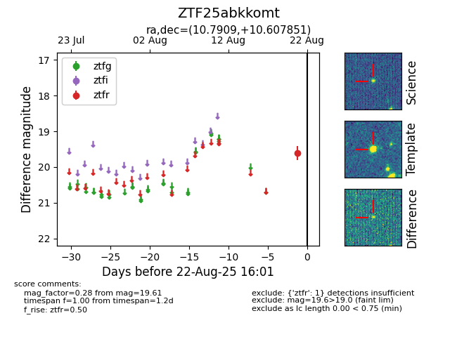

Target ZTF25abkkomt at 2025-08-22 16:26, see:
FINK: fink-portal.org/ZTF25abkkomt
Lasair: lasair-ztf.lsst.ac.uk/objects/ZTF25abkkomt
ALeRCE: alerce.online/object/ZTF25abkkomt
alt names
ZTF25abkkomt (ztf,alerce)
coordinates:
equatorial (ra, dec) = (10.7909,+10.60785)
galactic (l, b) = (119.6127,-52.21056)
photometry
last ztfr=19.61
1 ztfr detections
